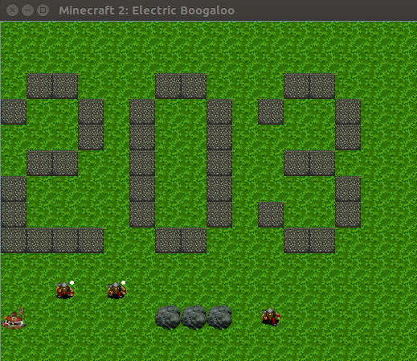

This programming is the complement Assignment 1, where you made a UML diagram. In this assignment, you'll be turning in the refactored code. As you refactor the code, you may want to change some of the decisions you made in assignment 1. That's fine, but keep your UML diagram in sync with your code changes.
You must identify the behavior associated with each class (i.e.,
the behavior exhibited by instances of the class) and move that behavior
from the standalone static methods in Functions.java to
methods defined within the class. For this assignment, you will also
add a little bit of new functionality: You'll finish up some work that was
left incomplete in the original program. You also will need to add some
accessor and mutator methods.
As you write the code for assignment 2, you will likely be tempted to change the UML diagram. Please do! It is normal to revisit assumptions you made earlier in the process. This is how a design gets better over time. When you make such a change, be sure to keep your diagram in sync. Your diagram will be checked to see if it agrees with your code.
WARNING: Not all sections of 203 have the same assignments. It's possible that tutors or other resources might not know this. Make sure you double-check the assignment instructions if you ask someone for clarification; they might have done a different assignment, or their memory might be off.
Functions.java to the appropriate classes.
You must refactor the methods from the Functions class
to move them into the appropriate classes as previously discussed. As
each method is moved, you will need to make modifications to the code
that uses the method. Your refactoring should mirror the work done for
your design document (UML diagram) augmented with what you've learned
since then.
Your refactoring must not add or remove any functionality. Your refactoring may add accessor/mutator methods, but only as needed. The resulting program must work as before.
It is not sufficient to simply move the static methods from
Functions to the other classes and then continue to invoke
them as public static methods. For instance, if you determine that a
method works primarily on data within an Entity object, then
the method must be made non-static and the explicit Entity
argument will be replaced by the implicit reference to this.
This modification will necessitate appropriate changes to the invocation of
the method.
As an example, moving the following (fake) method into Entity
will change it as shown.
class Functions
{
public static void turnAround(Entity entity, int numRotations)
{
... id ... (this.id is also correct, but less common)
}
...
// invocation of turnAround
turnAround(entity, 20);
}
becomes
class Entity
{
public void turnAround(int numRotations)
{
... this.id ...
}
...
// invocation of turnAround
entity.turnAround(20);
}
Of course, when you refer to static methods that haven't been moved
out of Functions.java yet, you'll have to add
Functions. before the method call. Then, when that method
moves to its new home, you'll have to change that call again.
First and foremost, only make one change at a time. You should never be more than five minutes or so away from a working version of your program. Make your changes as small as they can, and then compile and run the program. That way, if something goes wrong, you'll know that the problem is in something you just changed.
When searching for where something is accessed, consider using the
grep command to search for a string across a number of
files. See info/unix_commands.txt for a brief explanation.
Experienced programmers use grep all the time!
You can use the compiler to help you with your refactoring. In particular, as you make changes, the compiler will flag now invalid uses of moved methods. This serves two purposes. The first, and arguably most important, is gaining an understanding of the error messages that the compiler reports and the reasons for such error messages. Nobody enjoys seeing error messages, but quickly interpreting and addressing such errors will improve your workflow.
The second purpose for using the compiler as an aid is that it can quickly identify all parts of a code base affected by a change. This is incredibly beneficial when working with unfamiliar code.
Consider the following more specific tips.
WorldModel relies on Entity). Start
your refactoring by moving methods into those classes that depend on
the fewest other classes.
private, and
run the compiler. This will gell you where other classes attempt
to access the private attribute.
static, remove the
target object from the parameter list, and change all uses within the
method to this, eithher implicitly or explicitly. Compile
the program to determine where the method was invoked.
When you're done, Functions.java should contain an empty
class. When that happens, delete the file.
As you refactor the code, you may find other methods that can be moved from one class to another, and made into instance methods. For example, this might be clearer than adding a new getter or setter, when a data member is made private. As you find other improvements like these, make them!
With the exception of some constant (static final) values,
and the class Point,
all data attributes should be private and, when possible,
final. When you make something private, you may need
to add a getter and/or setter. It's OK for data holders like Point
to have public members, particularly when they are final.
Methods should also be private unless public
access is necessary (i.e., it is used outside of the defining class).
For this assignment, every method should be either private
or public. In this course, we are not using Java packages,
so Java's package-private access level is not meaningful.
VirtualWorld still has public static data members, and
static functions. We'll deal with this in a subsequent assignment.
When you run the program, you might notice that the miners don't
change appearance when they become full. That's because there's a bit
of unfinished work in the program. Look in the images
directory. You'll notice that there are a set of images called
miner_fulln.png. They add a white dot to the miner,
to indicate that it is full. Once you've finished refactoring the code,
your next job is to finish this work. Modify the program so that when
a miner becomes full, and starts seeking a blacksmith, it is rendered
with the appropriate image sequence. For text mode, use the sequence
"mM$mM" to render a full miner. When this is working, the
program will look like this:

If you feel ready, now would be a great time to get your computer set up,
instead of using the Unix servers or the lab machines. It's faster, you
don't need to be connected to the network, and it lets you see the graphics.
You still need to run checkgit on the Unix server, but there's
no particular reason to main a repo there. (Checkgit clones a copy of your
repo every time you run it).
If you are switching between computers, though, the easiest and most realiable way to keep the two versions of turnin consistent is by using git. When you make changes on one computer, add, commit and push your changes there, and then pull those changes on the other computer.
When you do this, you may notice that the image files don't get checked in.
That's intentional, because you don't need to change the images, and they're
somewhat large. So, if you are using multiple computers, you'll have to
copy the images directory into each project in each copy of your
turnin repository, either using the cp command as previously
described, or by using your computer's file browser.
Submit your program in turninXXX/p2 to GitHub
by midnight on the due date. Java source files should go in
turninXXX/p2/src, and your documentation files
should be in turninXXX/p2/doc. You'll probably want to
copy your run.sh file and the images directory to
turninXXX/p2, so you can do your work directly there.
When you submit the files to github, the image files won't be uploaded;
git has been configured to ignore them, in the file
turninXXX/.gitignore.
If you'd like to submit the assignment one day late with a penalty of 5%,
add a file called late_5_percent_off.txt to the
p2 directory. If you'd like to submit the assignment two
days late with a penalty of 15%, add a file called
late_15_percent_off.txt to the p2
directory. Make sure you add and push the late file.
After your code is working and submitted,
check your submission using the checkgit command on the
unix server. If the autograder can't find your files for a reason that
is caught by checkgit, you will get a zero on the assignment. To
check your submission, on a Unix server type:
checkgit <git-login> 203 p2
If it works, you will see the message "** Tests Passed **". If not, you will see some kind of error message. The error message might not tell you exactly what you need to change, but it should give an indication as to what is wrong.
The p2 directory must contain the following files:
src/Action.java
src/ActionKind.java
src/Entity.java
src/EntityKind.java
src/Event.java
src/EventScheduler.java
src/Point.java
src/VirtualWorld.java
src/WorldModel.java
doc/classes.graphml